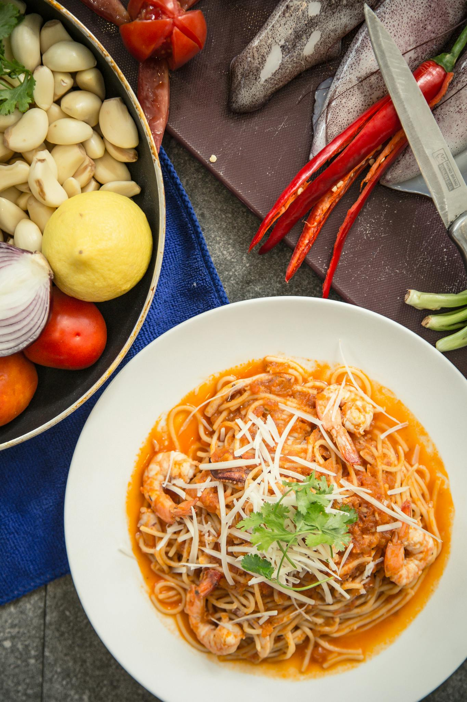

Creamy Lemon Garlic Pasta

Ingredients
- 8 oz (225g) spaghetti or linguine
- 3 cloves garlic, minced
- Zest and juice of 1 lemon
- 1 cup heavy cream
- 1/2 cup grated Parmesan
- 2 tbsp butter
- Salt, pepper, red pepper flakes
- Optional: spinach or arugula
Instructions
- Cook pasta and save ½ cup pasta water.
- In a pan, melt butter and sauté garlic (1-2 mins).
- Add cream, lemon zest/juice, Parmesan, and seasonings.
- Simmer until thickened slightly (3-5 mins).
- Add pasta + pasta water to the sauce. Toss well.
- Stir in greens if using. Serve with more Parmesan and pepper.